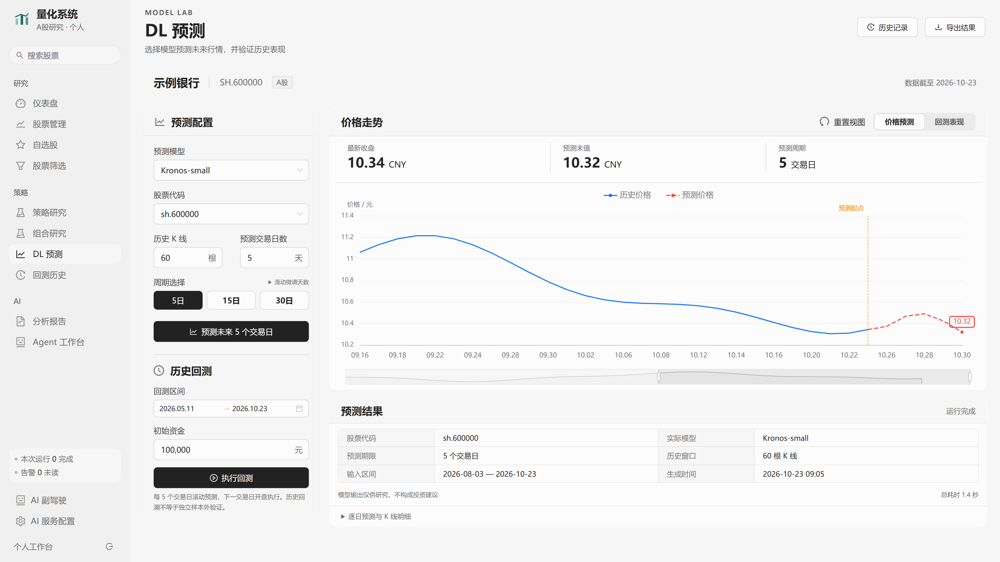

<!doctype html><meta charset="utf-8"><style>*{box-sizing:border-box}body{margin:0;background:#f6f6f6;color:#242424;font-family:"Microsoft YaHei",Arial,sans-serif}.frame{width:1920px;height:1080px;position:relative;overflow:hidden;padding:96px}.k{font-size:30px;letter-spacing:6px;color:#6b6b6b}.title{font-size:136px;font-weight:700;letter-spacing:-5px;margin-top:150px}.green{color:#1b6e66}.sub{font-size:54px;margin-top:36px}.num{position:absolute;right:100px;top:90px;font-size:32px;color:#6b6b6b}.stamp{position:absolute;bottom:70px;font-size:28px;color:#6b6b6b}.feature h1{font-size:78px;margin:35px 0}.feature img{position:absolute;width:1500px;left:280px;top:300px;border-radius:12px}.feature .bar{position:absolute;bottom:54px;background:#fcfcfc;padding:20px 30px;font-size:52px}.end{text-align:center}.end .title{margin-top:240px}.line{width:140px;height:5px;background:#1b6e66;margin:40px auto}</style><section class="frame"><div class="k">BACKING / PROJECT FILM</div><div class="num">01 — 研究工作台</div><div class="title">让每一次判断<br>都有<span class="green">研究依据。</span></div><div class="sub">Backing · 个人 A 股研究工作台</div><div class="stamp">演示数据 · 仅供研究</div></section><section class="frame feature"><div class="k">03 / MODEL LAB</div><h1>从历史出发，比较未来的可能。</h1><div class="bar">Kronos / TimesFM，多模型预测</div></section><section class="frame end"><div class="k">OBSERVE · RESEARCH · VALIDATE</div><div class="title green">Backing</div><div class="line"></div><div class="sub">研究有依据，判断可验证。</div><div class="stamp">量化系统 · 项目介绍 / 演示数据 · 仅供研究</div></section>